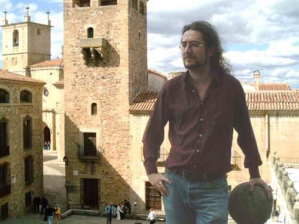

Joaquín M López Muñoz
 Joaquín is a telecom engineer from the Polytechnic University of Madrid. He currently works at Telefónica, Investigación y Desarrollo, the R&D branch of the Telefónica Group, where he leads a small group of developers of multimedia mobile applications. Though actual programming is not one of his job responsibilities, he still does some C++ for fun when nobody's around.
Joaquín's professional career began with his first exposure to a Dragon 32 (a Tandy TRS-80 clone) at the age of 13, though at the time he probably was unaware of the future impact of this event. He enjoys Mathematics, Logic and Latin; his lower case interests include paper folding, compulsory reading, travel and visiting all sorts of pubs and restaurants. You can contact him at joaquin@tid.es.